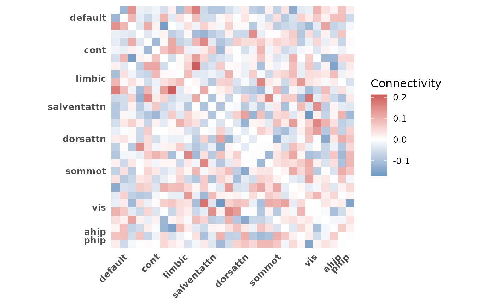
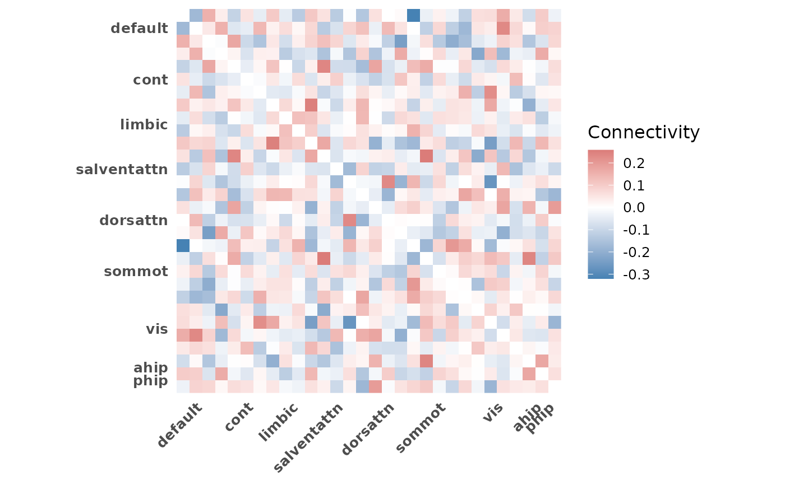
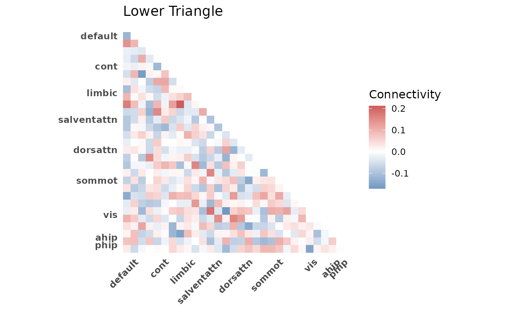
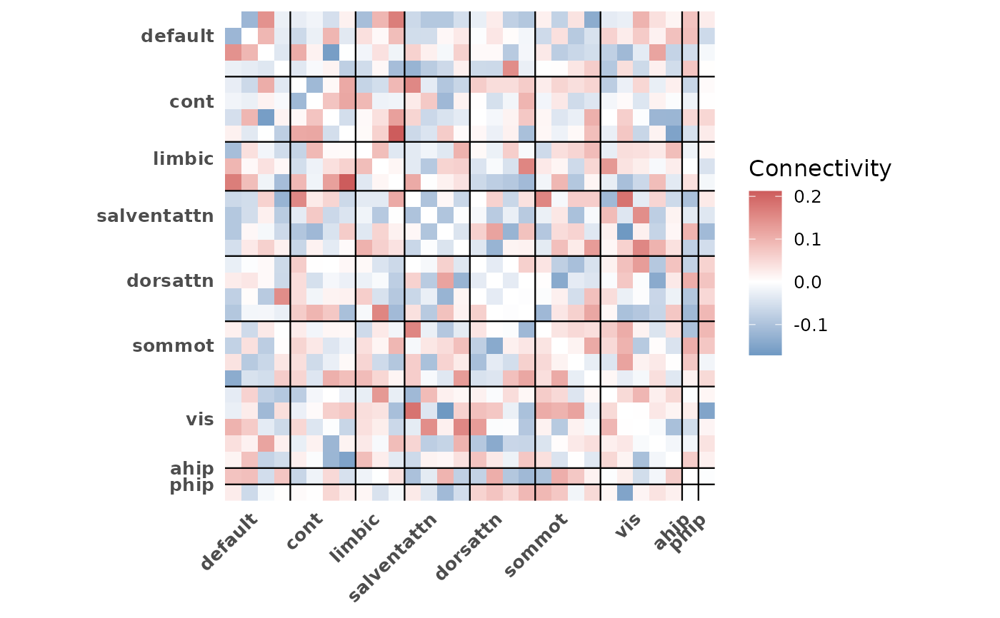
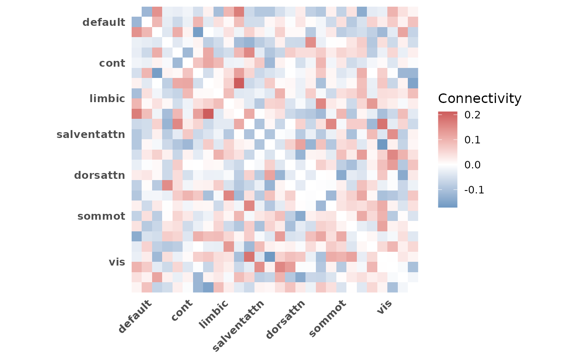

Plot connectivity matrix heatmap
plot_heatmap.RdVisualize a group-averaged ROI x ROI connectivity matrix as a heatmap with
network boundary lines and network-level axis labels. Averages across
selected subjects and displays network structure from indices.
Usage
plot_heatmap(
conn_array,
indices,
subjects = NULL,
diag = c("blank", "lower", "upper"),
grid = FALSE,
title = NULL
)Arguments
- conn_array
3D numeric array of connectivity values with dimensions (ROI x ROI x subjects)
- indices
Named list of integer vectors mapping network names to ROI index positions
- subjects
Integer or logical vector to subset subjects (third dimension). Defaults to all subjects. Logical vectors are converted to integer indices internally
- diag
Character. Controls diagonal and triangle display. One of:
"blank"(default): set diagonal to NA"lower": show lower triangle only"upper": show upper triangle only
- grid
Logical. If TRUE, draw network boundary lines and edge lines on the heatmap. Defaults to FALSE for a clean base plot that is easy to customize with additional ggplot2 layers
- title
Optional character string for the plot title
Details
The function averages connectivity values across selected subjects, then
plots the resulting matrix using ggplot2::geom_tile() with a
diverging color scale centered at zero.
Network boundary lines and axis labels are derived from the indices
object. ROIs are reordered to match the network ordering in indices.
Which ROIs appear in the heatmap is controlled by indices. Use
roi_include in get_indices to include or exclude
non-Schaefer ROIs.
The y-axis is reversed (scale_y_reverse()) so row 1 appears at the
top, matching conventional matrix layout. Keep this in mind when adding
custom scale layers, as replacing the y-scale will flip the orientation.
See also
plot_compare for group comparison bar plots.
plot_scatter for connectivity-behavior scatter plots.
get_indices for generating the indices input.
Examples
# Basic heatmap of all subjects
indices <- get_indices(ex_conn_array)
plot_heatmap(ex_conn_array, indices)

# Subset subjects by index
plot_heatmap(ex_conn_array, indices, subjects = 1:5)

# Subset with logical vector
plot_heatmap(ex_conn_array, indices, subjects = c(rep(TRUE, 5), rep(FALSE, 5)))
 # Lower triangle only
plot_heatmap(ex_conn_array, indices, diag = "lower", title = "Lower Triangle")
# Lower triangle only
plot_heatmap(ex_conn_array, indices, diag = "lower", title = "Lower Triangle")

# With boundary lines
plot_heatmap(ex_conn_array, indices, grid = TRUE)

# Schaefer-only heatmap (exclude non-Schaefer ROIs)
indices_sch <- get_indices(ex_conn_array, roi_include = "schaefer")
plot_heatmap(ex_conn_array, indices_sch)

if (FALSE) { # \dontrun{
# Group comparison workflow
z_mat <- load_matrices("data/conn.mat", type = "zmat", exclude = c(3, 5))
indices <- get_indices(z_mat)
# Young adults
plot_heatmap(z_mat, indices, subjects = demo$group == "YA",
title = "Young Adults")
# Older adults
plot_heatmap(z_mat, indices, subjects = demo$group == "OA",
title = "Older Adults")
} # }